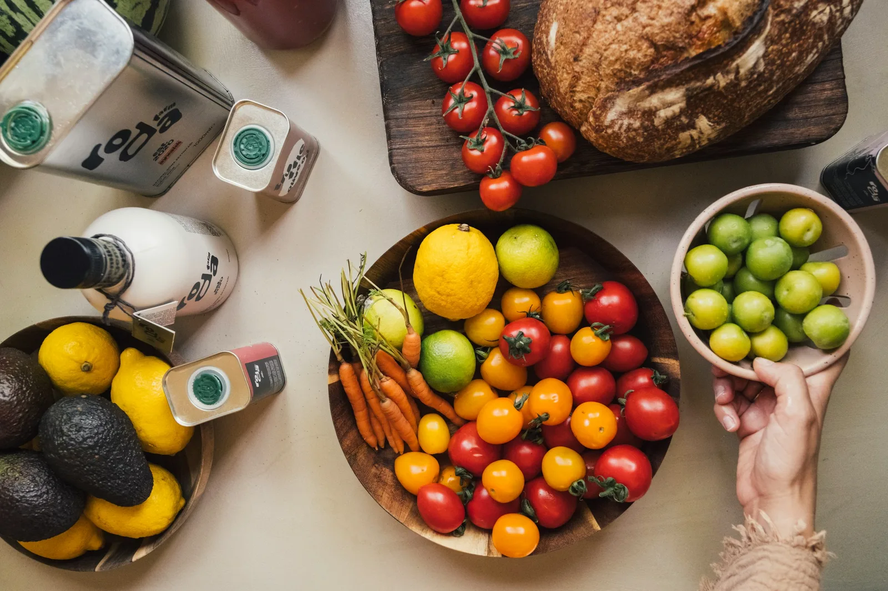
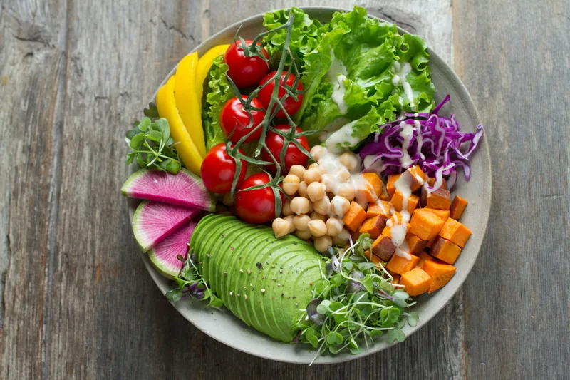
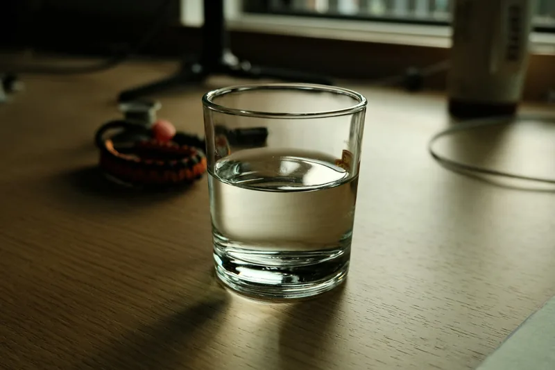
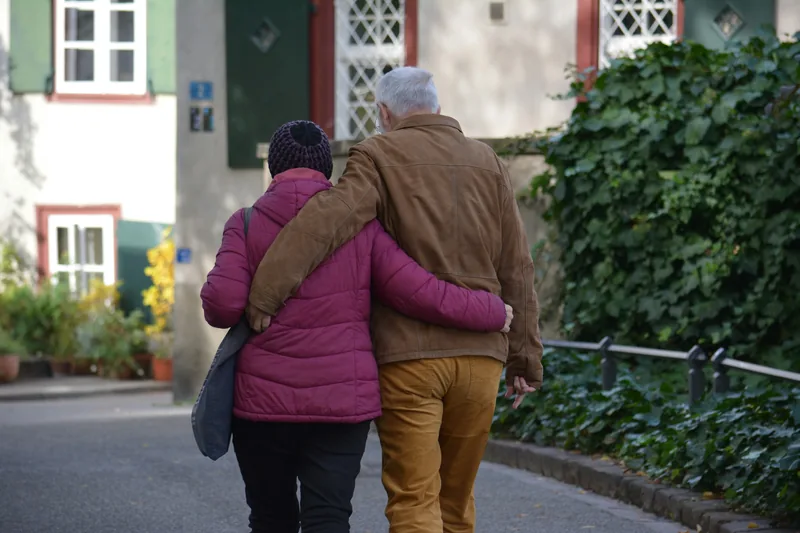
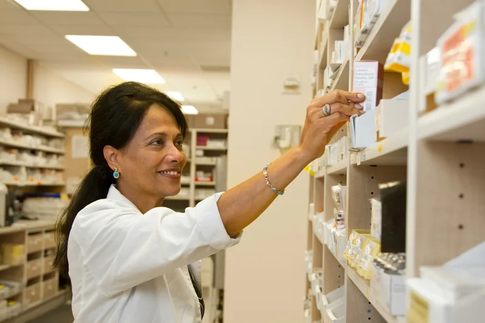

FeaturedKidney health · 7 min read
The five stages of kidney disease, explained
What your eGFR number means, what changes at each stage and the questions worth asking your nephrologist.


The Tidewell blog
Practical, kind advice from our nephrologists, nurses and dietitians.
Latest articles
Seven guides written by our care team and patients, on the questions we hear most often in the treatment bay.
Showing all 7 articles
What your eGFR number means, what changes at each stage and the questions worth asking your nephrologist.

Lower-salt masalas, leaching vegetables, choosing fruit and getting enough protein on dialysis, with an everyday plate as a guide.


What counts as fluid, how to read your weight gain between sessions and practical ways to manage thirst on hot Chennai days.


Walking, chair exercises and resistance bands: how to start slowly, protect your fistula or PD catheter and know when to stop.
Read articleWhen to start planning, which reports a visiting centre needs, how to handle PD supplies and what to pack for the journey.

Why kidney failure affects mood, the signs of depression and anxiety to look out for, and the support available to you and your family.
Read article
Phosphate binders, blood pressure tablets, iron and vitamin D: what they do, when to take them around dialysis and how to stay organised.
Read articleNo more articles on this topic yet. Show all articles
Ask our team
Our nurses and dietitians answer questions at every visit. You can also browse the help centre or book a chat.
Book a free visit to see a Tidewell centre, meet the team and ask anything about dialysis.